01. Project Overview
본 프로젝트는 환자의 개인정보, 진단 및 처치 정보를 활용하여 적절한 처방 약물을 예측하는 머신러닝 문제를 다룹니다. 서로 다른 가정과 특성을 가진 여러 분류 모델을 동일한 의료 데이터셋에 적용하고, 모델별 성능 차이를 비교·분석하는 것을 목표로 했습니다.
MIMIC-IV 의료 데이터셋을 활용하여 다중 로지스틱 회귀, LASSO 로지스틱 회귀, LDA, Random Forest, SVM Linear, SVM Radial 모델을 실험하였고, 각 모델의 정확도와 데이터 적합성을 비교하여 의료 데이터의 구조적 특성을 분석했습니다.
02. Motivation & Goal
Research Motivation
의료 인력 부족 문제로 인해 의료진의 의사결정을 보조할 수 있는 데이터 기반 시스템의 필요성이 커지고 있습니다. 그러나 의료 데이터는 변수 간 관계가 복잡하고, 클래스 분포가 불균형하며, 선형 가정을 만족하지 않는 경우가 많습니다.
따라서 본 프로젝트는 “어떤 머신러닝 모델이 의료 데이터에 더 적합한가?”, “선형 모델과 비선형 모델의 차이는 실제 성능에 얼마나 영향을 미치는가?”라는 질문에서 출발했습니다.
Research Goal
- MIMIC-IV 의료 데이터셋을 기반으로 처방 약물 예측 문제 정의
- 선형 모델과 비선형 모델을 포함한 다양한 분류 기법 적용
- 모델별 정확도 비교를 통해 데이터의 구조적 특성 분석
- 의료 데이터에서 비선형 모델의 필요성 검증
- 단순 성능 비교를 넘어 각 모델의 한계와 장단점 해석
03. My Role
Problem Definition
환자 정보와 진단 정보를 기반으로 처방 약물을 예측하는 문제를 정의하고, 비교할 머신러닝 모델과 평가 방향을 설정했습니다.
Data Preprocessing
MIMIC-IV 기반 의료 데이터를 정리하고, 모델 입력에 사용할 변수와 타깃 변수를 구성했습니다.
Model Training
R 기반으로 다중 로지스틱 회귀, LASSO, LDA, Random Forest, SVM 모델을 학습하고 성능을 비교했습니다.
Result Analysis
모델별 정확도를 비교하고, 선형 모델과 비선형 모델의 성능 차이를 의료 데이터 특성과 연결해 해석했습니다.
04. Dataset
데이터셋은 MIMIC-IV를 활용했습니다. MIMIC-IV는 MIT PhysioNet에서 제공하는 중환자실 기반 의료 데이터베이스로, 환자 정보, 진단, 처방 등 다양한 임상 정보를 포함합니다.
Data Size
총 49,125개 행과 11개 열로 구성된 의료 데이터셋을 활용했습니다.
Target
환자 정보, 진단, 처치 정보를 입력으로 사용하고 처방 약물명을 예측 대상으로 설정했습니다.
| 변수 | 설명 |
|---|---|
| V1 | 환자 정보 아이디 subject_id |
| V2 | 환자의 성별 |
| V3 | 환자의 나이 |
| V4 | BMI |
| V5 | 혈압 |
| V6 | 키 |
| V7 | 체중 |
| V8 | 환자의 입원 정보 아이디 |
| V9 | 환자의 진단명 |
| V10 | 환자의 처치 정보 |
| V11 | 처방된 약물명 |
05. Experiment Workflow
전체 실험은 데이터 전처리, 변수 선정, 모델 학습, 성능 비교, 결과 해석의 흐름으로 진행했습니다.
06. Models
본 프로젝트에서는 서로 다른 가정과 특성을 가진 6가지 분류 모델을 비교했습니다. 이를 통해 선형 모델과 비선형 모델이 의료 데이터에서 어떤 차이를 보이는지 확인했습니다.
Multinomial Logistic Regression
다중 클래스 분류를 위한 기본 선형 모델로, 데이터가 선형적으로 구분되는지 확인하기 위한 기준 모델로 사용했습니다.
LASSO Logistic Regression
L1 정규화를 적용하여 노이즈를 줄이고 중요한 변수를 선택하는 효과를 확인했습니다.
LDA
클래스별 분포와 선형 판별 기준을 활용하여 다중 클래스 분류 성능을 확인했습니다.
Random Forest
여러 의사결정나무를 기반으로 비선형 패턴을 학습할 수 있는 앙상블 모델을 적용했습니다.
SVM Linear
선형 결정 경계를 기반으로 마진을 최대화하는 분류 성능을 확인했습니다.
SVM Radial
RBF 커널을 적용하여 비선형 결정 경계를 학습할 수 있는 모델로 실험했습니다.
07. Results
모델별 정확도를 비교한 결과, 선형 모델들은 전반적으로 낮은 성능을 보였고, 비선형 패턴을 학습할 수 있는 모델에서 상대적으로 높은 성능을 확인했습니다.
Best Model
비선형 커널을 적용한 SVM Radial 모델이 41%의 정확도로 가장 우수한 성능을 보였습니다.
Linear Model Limitation
다중 로지스틱 회귀는 3.9% 정확도로, 선형 모델의 한계를 확인했습니다.
| 모델 | 정확도 | 해석 |
|---|---|---|
| 다중 로지스틱 회귀 | 3.9% | 선형 경계만으로는 복잡한 의료 데이터 패턴을 학습하기 어려움 |
| LASSO 적용 다중 로지스틱 회귀 | 18.3% | 변수 선택 효과로 성능이 개선되었으나 비선형 패턴 학습에는 한계 |
| LDA | 20.6% | 선형 판별 구조로 일부 개선되었으나 비선형 경계 처리에는 한계 |
| Random Forest | 72.8% | 높은 정확도를 보였으나 클래스 불균형과 해석 가능성 측면에서 추가 검토 필요 |
| SVM Linear | 20.6% | 마진 최대화로 성능이 개선되었으나 LDA와 유사한 수준 |
| SVM Radial | 41% | 비선형 구조를 반영하여 비교 모델 중 가장 신뢰 가능한 성능을 보임 |
08. Conclusion
실험 결과, 의료 데이터는 변수 간 관계가 단순하지 않고 비선형적인 구조를 가지기 때문에 단순 선형 모델만으로는 충분한 성능을 얻기 어렵다는 점을 확인했습니다.
| 모델 | 결론 요약 |
|---|---|
| 다중 로지스틱 회귀 | 데이터가 선형적으로 분리되지 않아 복잡한 패턴을 제대로 학습하지 못함 |
| LASSO 로지스틱 회귀 | 노이즈를 줄이고 중요한 변수를 선택했지만 비선형 경계 학습에는 한계가 있음 |
| LDA | 정규성 가정을 활용해 일부 성능 개선을 보였으나 비선형 경계를 처리하지 못함 |
| Random Forest | 정확도는 높았지만 클래스 불균형과 모델 해석 가능성 측면에서 신뢰성 검토가 필요함 |
| SVM Linear | 선형 마진 기반 모델로 다중 로지스틱 회귀보다 성능이 높았지만 LDA와 유사한 수준 |
| SVM Radial | 비선형 패턴을 효과적으로 반영하여 최종적으로 가장 적절한 비교 모델로 판단함 |
09. Presentation PPT
프로젝트 개요, 데이터셋, 모델별 실험 결과, 결론을 발표 자료로 정리했습니다.
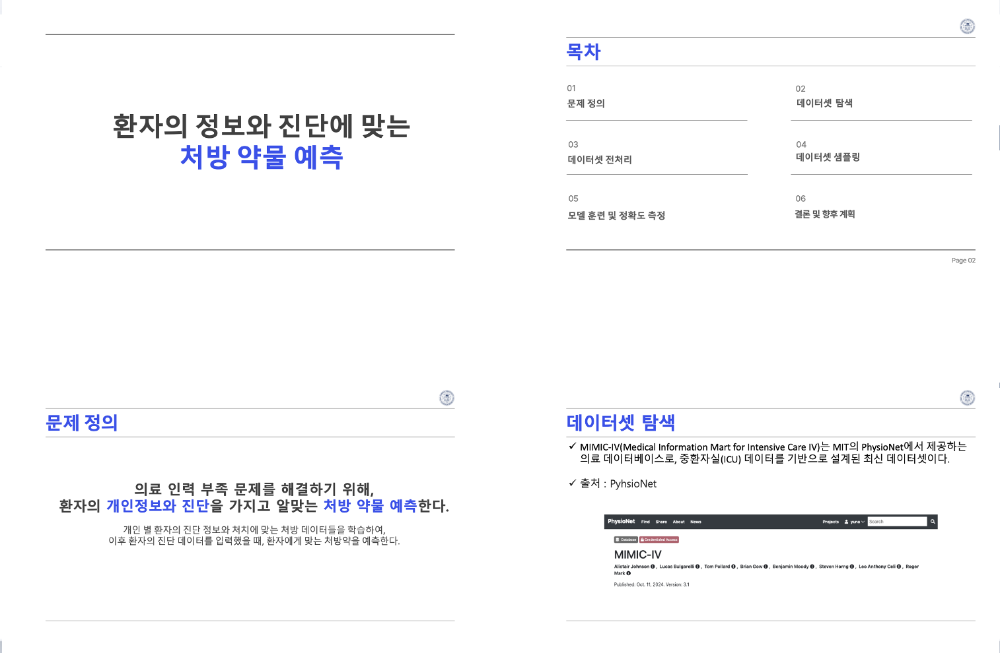
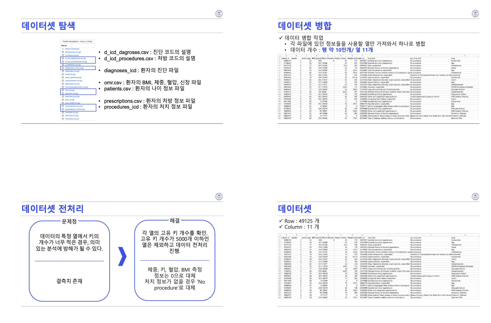

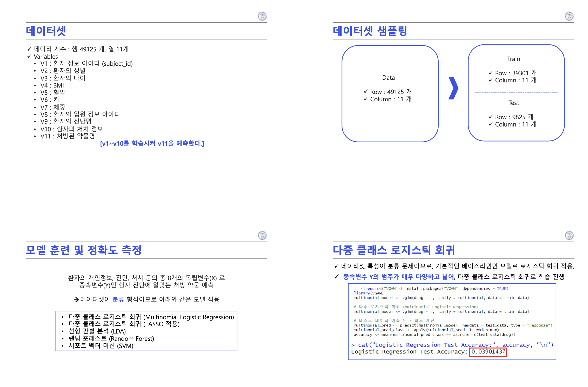
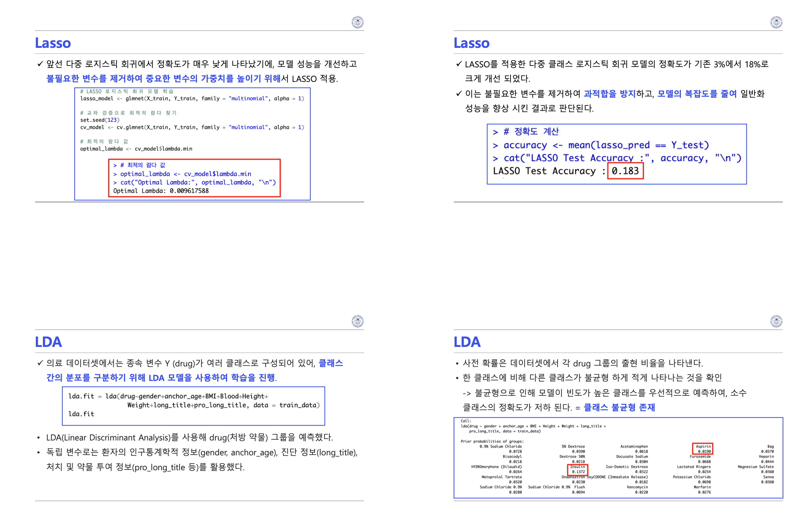
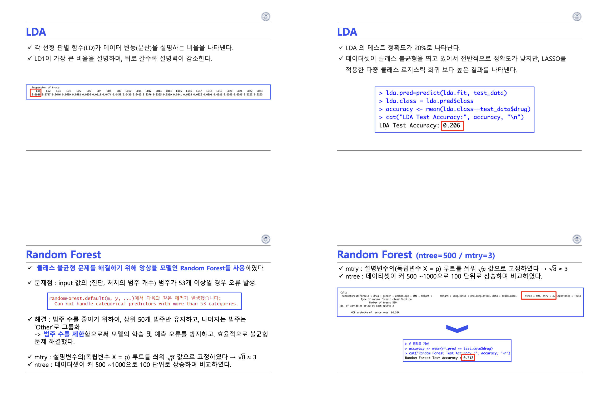
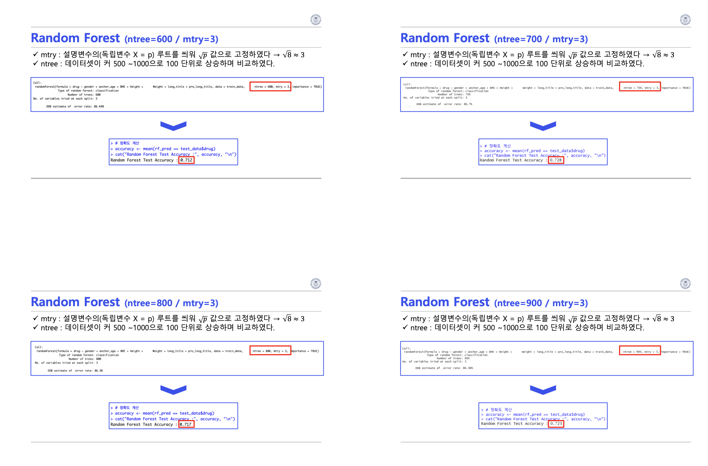
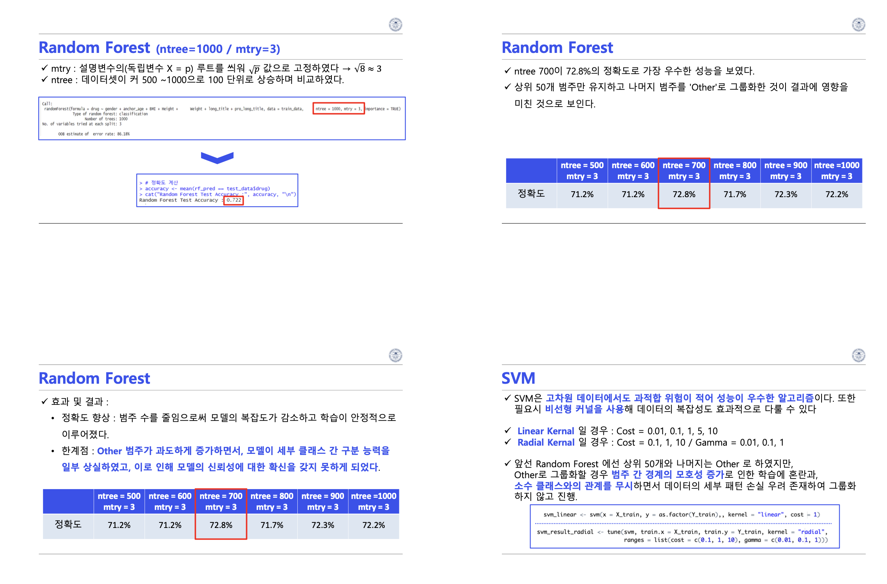
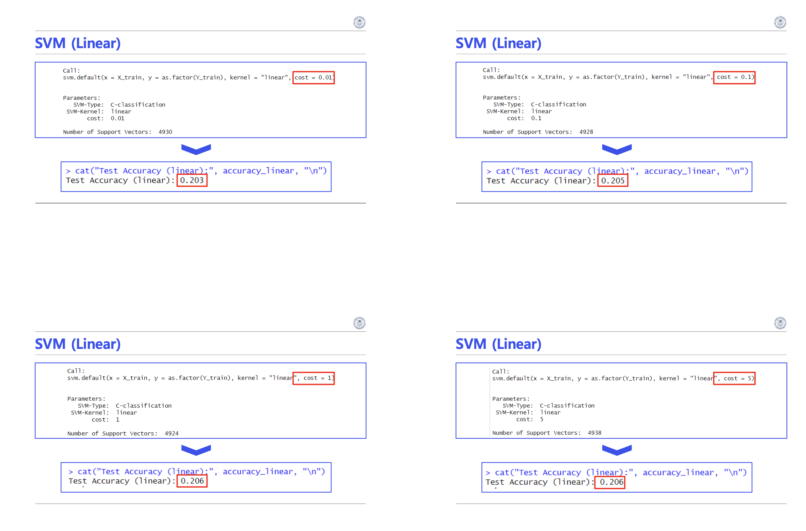
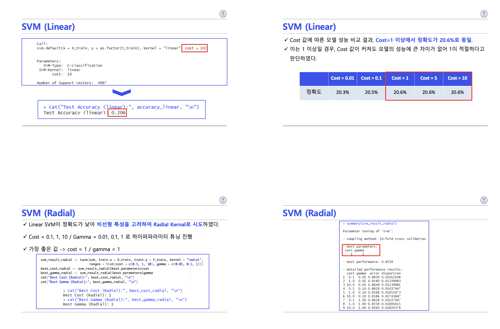
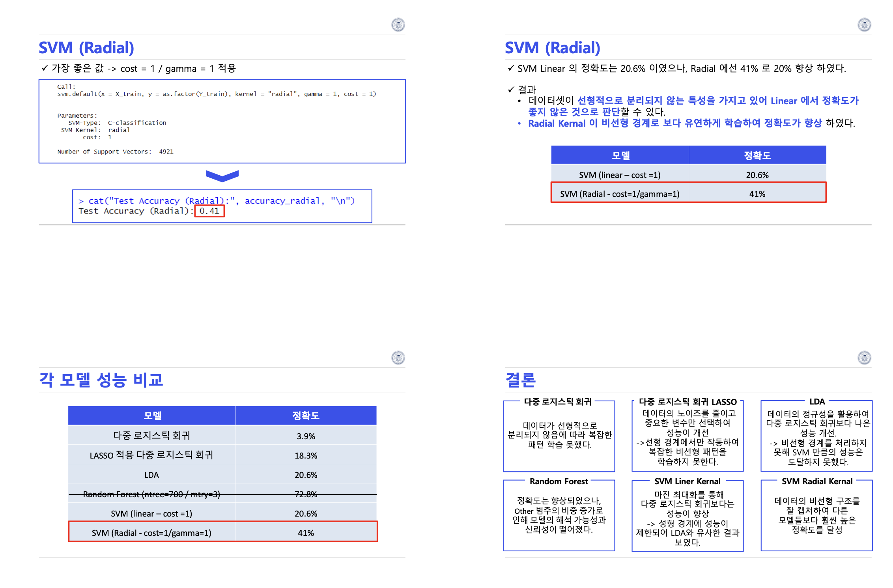
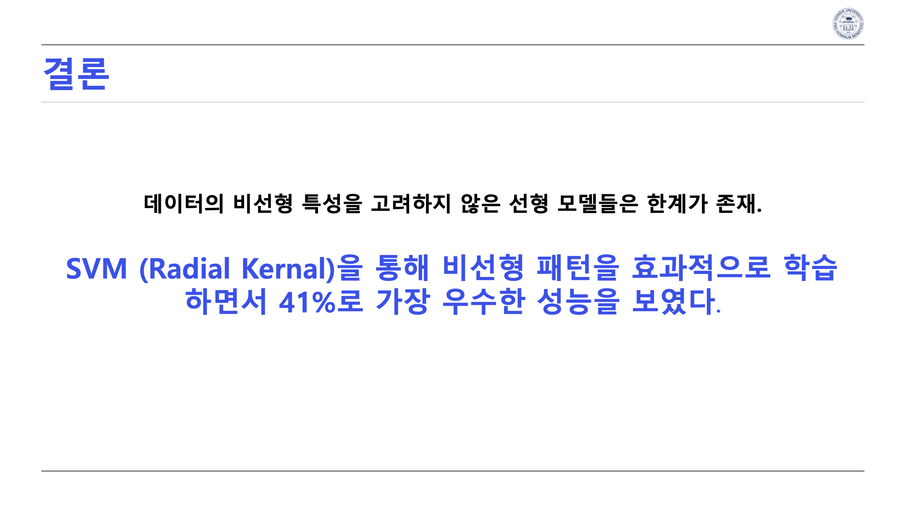
10. Source Code
프로젝트 코드 또는 실험 자료는 아래 GitHub 저장소에서 확인할 수 있습니다.
GitHub Repository 보기 →